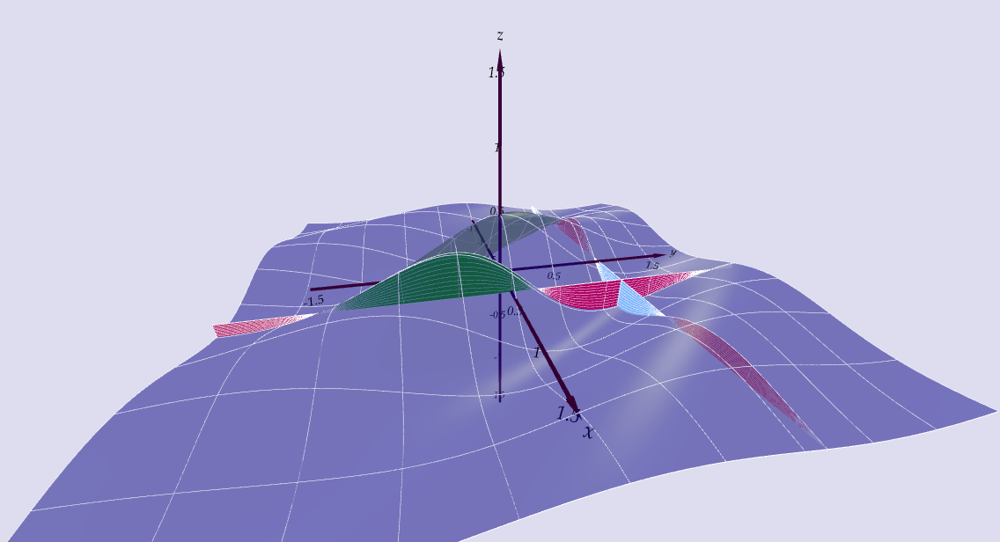

Lecture 14
Integrals
APMA E2000
Drew Youngren dcy2@columbia.edu
Announcements
- Happy $2^{10} day$!
-
Quiz 6 this week
- Local Extrema
- Optimization
- HW8 due 10/31
1-minute review
Theorem
A continuous function on a closed and bounded set $D$ must achieve its absolute minimum and maximum.
- Find critical points on interior of $D$.
- Find Lagrange points on boundary of $D$.
- Choose least/greatest value of $f$ on combined list.
Definite Integrals
Recall
\[\int_a^b f(x)\,dx = \lim_{N\to \infty} \sum_{i=1}^{N} f(x_i^*)\,\Delta x \] where $x_i^*$ is a sample point in the $i$th interval and $\Delta x = \frac{b - a}{N}$.
Example
Multiple Integration
What questions can integrals answer?
- What is the volume of air in a circus tent?
- What are the chances a dart thrown at a bullseye lands on triple-20?
- What is the average temperature in this room?
Poll
Definition
A double integral over a region $\mathcal R \subset \RR^2$ of a scalar field $f(x,y)$ is a limit of Riemann sums \[\iint\limits_{\mathcal R} f\,dA = \lim\limits_{M,N \to \infty} \sum_{i = 1}^M \sum_{j=1}^N f(x_{ij}^*, y_{ij}^*)\,\Delta A_{ij} \] where $(x_{ij}^*, y_{ij}^*)$ is a sample point in, and $ \Delta A_{ij}$ the area of, the $(i,j)$th subrectangle inside $\mathcal R$.
Graphically, this is the signed volume under the graph of the function.

Iterated Integrals
Poll
Iterated Integrals
Over a rectangle $[a,b]\times [c,d] \subset \RR^2$, we define the iterated integral \[ \int_a^b \int_c^d f(x,y)\,dy\,dx = \int_a^b \left(\int_c^d f(x,y)\,dy\right)\,dx\]
Iterated Integrals
Fubini's Theorem
If $f$ is continuous on rectangle $\mathcal R = [a,b]\times [c,d]$, then \[ \iint\limits_{\mathcal R} f\,dA =\int_a^b \int_c^d f(x,y)\,dy\,dx = \int_c^d \int_a^b f(x,y)\,dx\,dy. \]
Example
Let $\mathcal{R} = [0,\pi]\times[0,2\pi]$. Evaluate \[\iint_\mathcal{R} x \cos(xy)\,dA\] as an iterated integral.
Non-rectangular domains
A region in $\RR^2$ that is bounded by graphs of functions (of one variable) can be integrated over as interated integrals.
Suppose $\mathcal{D} = \{(x,y) \mid g(x) \leq y \leq h(x) \}$. Then
\[\iint_\mathcal{R} f(x,y) \,dA = \int_a^b \int_{g(x)}^{h(x)} f(x,y)\,dy\,dx\]
Example
Let $\mathcal D$ be the region bounded by the curves $y = \frac{x^3}{32}$ and $y = \sqrt{x}$. Write $\iint\limits_{\mathcal D} f\,dA$ as an iterated integral.
Example
Find the volume of the solid region under the plane $x-2y+z=10$ and above the region bounded by $x+y=1$ and $x^2+y=1$.
- Sketch region of integration.
- Select order of integration.
- Set up iterated integral.
Triple Integrals
Definition
Integrating in three dimensions presents no theoretical challenge. \[\iiint_E f(x,y,z)\,dV = \lim_{M,N,P\to\infty} \sum_{i=1}^M\sum_{j=1}^N\sum_{k=1}^P f(x_i^*,y_j^*,z_k^*)\,\Delta V_{ijk}\]
Fubini's Theorem applies directly to this case; thus, we can compute using (3) iterated integrals. \[ \iiint_E f(x,y,z)\,dV = \int_a^b \int_{g(x)}^{h(x)} \int_{j(x,y)}^{k(x,y)} f(x,y,z)\,dz\,dy\,dx \]
Example
Set up an iterated integral to find the volume of the solid region $E$ in the first octant with \[x^2 + y^2 \leq z \leq 4.\]
Bonus
Suppose a point $(x,y,z)$ is selected randomly from $E$ above. What is the probability that $x > 1$?